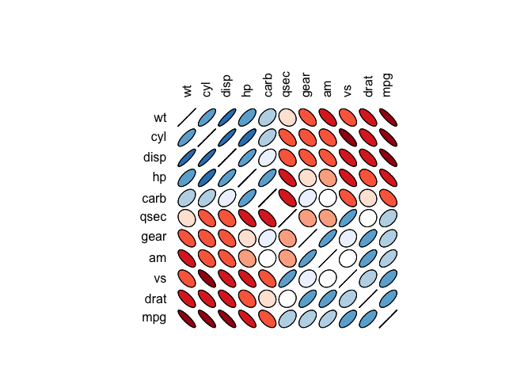

ellipse contains ellipse drawing routines designed for pairwise confidence regions, including distorted ellipses for nonlinear regression regions. It also includes a routine plotcorr() for plotting correlation matrices using ellipses.
Installation
It is on CRAN, and can be installed using
install.packages("ellipse")You can install the development version of ellipse from GitHub with:
# install.packages("devtools")
devtools::install_github("dmurdoch/ellipse")Example
The plotcorr() function can a matrix of ellipses:
library(ellipse)
#>
#> Attaching package: 'ellipse'
#> The following object is masked from 'package:graphics':
#>
#> pairs
corr.mtcars <- cor(mtcars)
ord <- order(corr.mtcars[1,])
xc <- corr.mtcars[ord, ord]
colors <- c("#A50F15","#DE2D26","#FB6A4A","#FCAE91","#FEE5D9","white",
"#EFF3FF","#BDD7E7","#6BAED6","#3182BD","#08519C")
plotcorr(xc, col=colors[5*xc + 6])